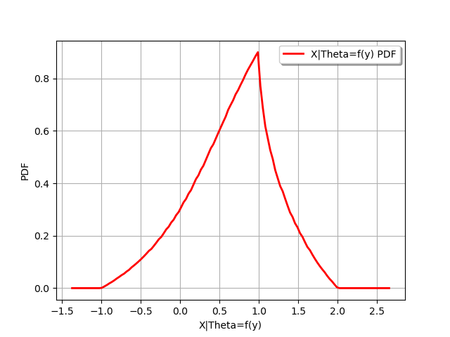

Note
Click here to download the full example code
Create a conditional distribution¶
In this example we are going to build the distribution of the random vector X conditioned by the random variable Theta
with Theta obtained with the random variable Y through a function f
import openturns as ot
import openturns.viewer as viewer
from matplotlib import pylab as plt
create the Y distribution
YDist = ot.Uniform(-1.0, 1.0)
create Theta=f(y)
f = ot.SymbolicFunction(["y"], ["y", "1+y^2"])
create the X|Theta distribution
XgivenThetaDist = ot.Uniform()
create the distribution
XDist = ot.ConditionalDistribution(XgivenThetaDist, YDist, f)
XDist.setDescription(["X|Theta=f(y)"])
XDist
Get a sample
XDist.getSample(5)
draw PDF
graph = XDist.drawPDF()
view = viewer.View(graph)
plt.show()

Total running time of the script: ( 0 minutes 0.125 seconds)